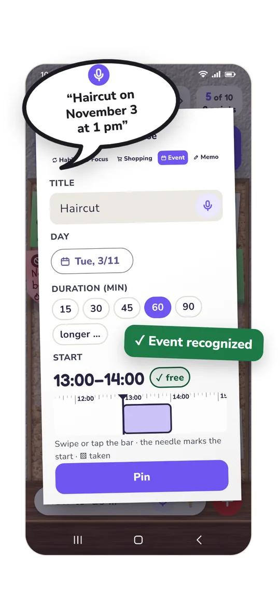
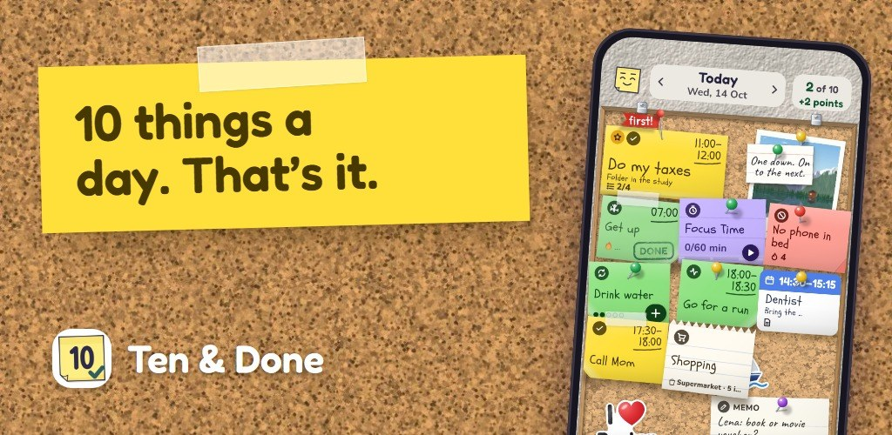

Press
Text, facts and images about Ten & Done. Everything here is free to use in coverage of the app.
In short
Ten & Done: one board instead of sticky-note chaos – exactly ten tasks a day
Appointments in the calendar, tasks in your head, sticky notes on the fridge and a to-do list that never gets shorter: the Ten & Done app brings it all onto one board. It holds exactly ten notes, and big and small tasks count the same. Calendar events show up on their own, and new thoughts can simply be spoken in. Whatever doesn’t fit today waits in the “parking spot”. In the morning you commit to your plan, during the day you check things off, and once the ten are done, the day’s work is done. Habits, a shopping list, notes and a home-screen widget are included. The app needs no account, shows no ads and keeps everything on your own phone. It was developed by Andreas Zimmermann from Düsseldorf, Germany. Ten & Done is expected to launch in December 2026, free for Android and iPhone; Premium with more views costs €12.99 a year or €29.99 once.
Facts at a glance
| Name | Ten & Done (trademark pending) |
|---|---|
| What | To-do list and daily planner with exactly ten tasks a day |
| For | Android (Android 8 and later) and iPhone (iOS 15 and later), phone and tablet |
| Languages | English, German |
| Release | expected in December 2026, on Google Play and the App Store |
| Price | free; Premium €12.99 a year or €29.99 once (prices in Germany) |
| Data | no account, no ads, no trackers; everything stays on the device, backups only if you turn them on yourself |
| Developer | Andreas Zimmermann, Düsseldorf, Germany |
| Website | tenanddone.app |
| Contact | hallo@tenanddone.app |
Who’s behind it
Ten & Done was developed by Andreas Zimmermann from Düsseldorf, Germany.
“I had Post-its stuck to my monitor and the fridge. Appointments lived in my Outlook calendar, tasks in my head, birthdays nowhere at all, plus shopping lists and notes on a notepad. I searched for a long time for an app that could get this mess under control – and found none I liked. So I built it myself – with an AI helping me with the programming.”
Images
Free to use with the credit “Image: Ten & Done”. All images show made-up examples.
⬇ Download all images (ZIP, 4.0 MB)






Tap an image to download it in full size (JPEG, long side 2000 px). German versions are in the ZIP and on the German page.
Contact
For questions, an interview or a Premium code for testing: hallo@tenanddone.app